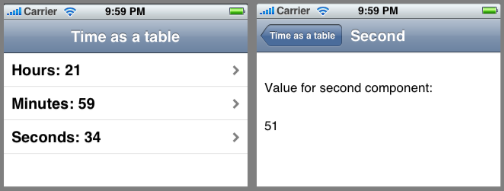

Please note: this article is part of the older "Objective-C era" on Cocoa with Love. I don't keep these articles up-to-date; please be wary of broken code or potentially out-of-date information. Read "A new era for Cocoa with Love" for more.
Recreating UITableViewController to increase code reuse
UITableViewController and UIViewController are the two most commonly implemented controllers on the iPhone. It may not always be clear what UITableViewController adds to its superclass. I'll show you what UITableViewController does by recreating its functionality on top of UIViewController and show you why doing this can provide a richer base controller class that you can use throughout your iPhone application.
This week, an iPhone app
In this post, I'll present a small iPhone application that displays the time in a table on the front screen, with detail screens for each component when the respective row is clicked.
("second" shown on the right is the unit of time, not the 2nd row)
With this application, the code to monitor the time and update when it changes is in a base class common to both the UITableView's controller (left) and the UIView's controller (right).
If you followed the standard practice of using UITableViewController subclasses for UITableView-based screens and UIViewController subclasses for all other screens, keeping this code common would not be possible. I'll show how to make it possible by recreating the functionality of UITableViewController in your own UIViewController subclasses.
UITableViewController versus UIViewController
Between UITableView and navigation-based controllers, Apple did an excellent job of establishing a standard interaction paradigm for the iPhone. This established standard works so well that programmers use UITableViewController for most screens in their programs.
UITableViewController makes the simple, common case easier but it creates a problem if your program needs shared functionality between table view and views based on UIViewController (where self.view is not a UITableView). The problem is that common functionality for screens in your program must now be duplicated — once to include this functionality in your UIViewController subclass and once to include the functionality in your UITableViewController subclass.
My preferred solution to this problem is to create my own program-wide base class which is a subclass of UIViewController. I put my common code in the base class and when I need a controller for a UITableView, recreate the work done by UITableViewController in a subclass of my own base class which can then be the base class for all UITableView controllers in my program.
Recreating UITableViewController
To recreate it, we need to know what UITableViewController does. Given the class' ubiquity, it may be surprising to learn that it doesn't do very much.
As detailed in the API documentation, UITableViewController adds the following functionality:
- A constructor (
initWithStyle:) that sets the style for the default contructed table (if the table isn't constructed from a NIB file). - An implementation of
loadViewthat creates the default table if the view controller is used without a NIB file. - Implementation of the
tableViewproperty. - Includes the
UITableViewDelegateandUITableViewDataSourceproperties but doesn't provide any implementations of the methods. - Invokes
setEditing:animated:on theUITableViewwhen it is invoked on the controller. - Reloads the table data and clears the selection in
viewWillAppear:. - Flashes the scroll indicators of the table in
viewDidAppear:. - Scrolls the table so that selected cells are visible when the keyboard is shown.
I personally consider some of these "optional" and normally leave them out unless I need to use them. I normally leave out the reloading of table data altogether as I feel application logic can handle this more efficiently. What follows are the essential methods.
An implementation of loadView looks like this:
- (void)loadView
{
if (self.nibName)
{
[super loadView];
NSAssert(tableView != nil, @"NIB file did not set tableView property.");
return;
}
UITableView *newTableView =
[[[UITableView alloc]
initWithFrame:CGRectZero
style:UITableViewStylePlain]
autorelease];
self.view = newTableView;
self.tableView = newTableView;
}I've hard-coded the UITableViewStyle here instead of relying on a initWithStyle: constructor. Since this is my code, I'm happy to select the default value I want for my program here, I don't need to specify this value at initialization.
Notice that I set the self.view and the self.tableView separately. In UITableViewController, these two properties are always the same value. I like to keep a distinction between the two in my UITableView controller so that my controller can manage a wrapper view around the table view as well. Obviously in this default case, there is no wrapper, so both are set to be the same. If there were both the same, I wouldn't need the tableView ivar (see accessors below) I would use the same self.view storage for both.
The only other default code required are the tableView and setTableView: methods for the tableView property. The only important steps here are to set the table's delegate and dataSource to the controller.
- (UITableView *)tableView
{
return tableView;
}
- (void)setTableView:(UITableView *)newTableView
{
if ([tableView isEqual:newTableView])
{
return;
}
[tableView release];
tableView = [newTableView retain];
[tableView setDelegate:self];
[tableView setDataSource:self];
}Scrolling the table when the keyboard appears
Scrolling the table so that the current row is visible when the keyboard appears is another behavior that UITableViewController provides by default.
You can use the approach I gave in an earlier post to achieve this: Sliding UITextFields around to avoid the keyboard.
The time display application
In the sample app, my BaseViewController (a subclass of UIViewController) contains methods that start an NSTimer when the view appears and stop it when the view disappears.
This timer fires the following method:
- (void)timerUpdate:(NSTimer *)aTimer
{
NSDate *date = [NSDate date];
NSCalendar *calendar = [NSCalendar currentCalendar];
const NSInteger unitFlags =
NSHourCalendarUnit | NSMinuteCalendarUnit | NSSecondCalendarUnit;
NSDateComponents *components =
[calendar components:unitFlags fromDate:date];
if (![components isEqual:lastComponents])
{
[lastComponents release];
lastComponents = [components retain];
[self updateWithDateComponents:components];
}
}The updateWithDateComponents: is empty but subclasses of BaseViewController can implement it to update themselves when the time changes. In this way, every screen in my application automatically receives per-second updates.
The TimeTableViewController in the application is then a subclass of BaseViewController which further adds UITableViewController-like functionality (as shown above) and combines the two to constantly update the time components in the table.
The DetailViewController (which is constructed when a row is clicked) is also a subclass of BaseViewController but when an updateWithDateComponents: message is received, only displays the component for which it is the "detail" view.
Conclusion
You can download the complete code for the RecreatingTableViewController application (29kB) discussed in this post.
UITableViewController exists to make working with simple tables slightly quicker, since they are the most common type of primary view on the iPhone.
However, this class is merely a convenience and if your design requires it you can avoid UITableViewController entirely — as in this post where the inheritance worked better without using UITableViewController.
Scripted window management in Xcode
Using NSKeyedArchiver to archive a C linked-list